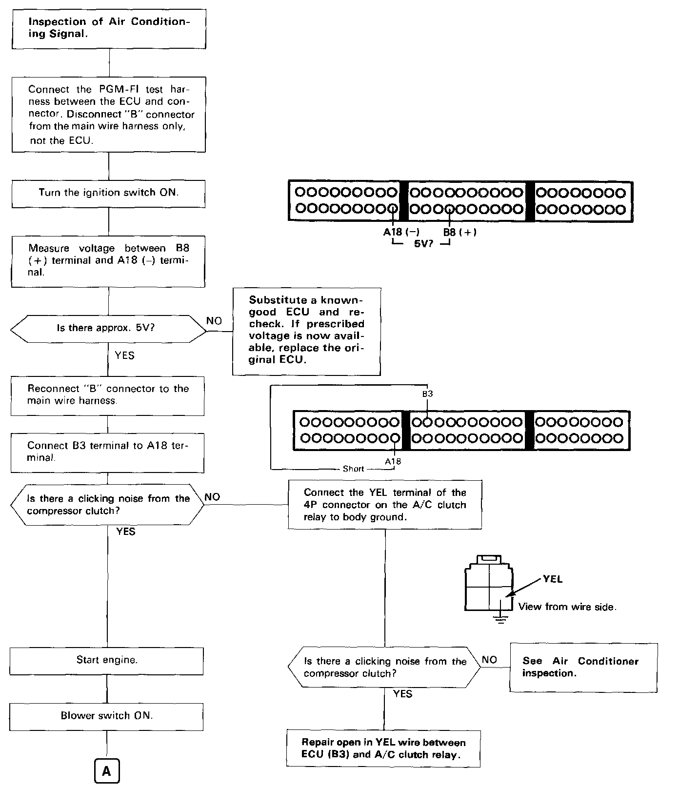
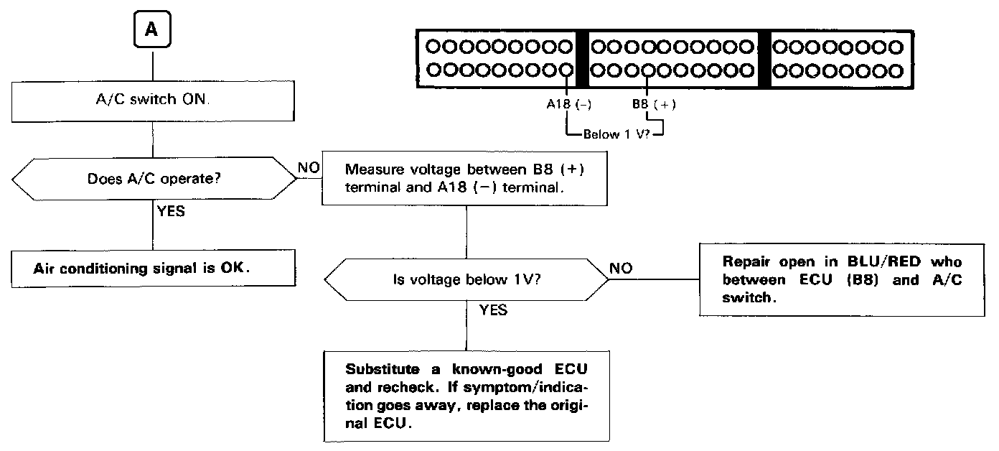

Operation CHARM
: Car repair manuals for everyone.
Home
>>
Acura
>>
1988
>>
Integra L4-1590cc 1.6L DOHC FI
>>
Repair and Diagnosis
>>
Powertrain Management
>>
Computers and Control Systems
>>
Testing and Inspection
>>
Component Tests and General Diagnostics
>>
A/C Signal Circuit Troubleshooting
A/C Signal Circuit Troubleshooting
This signals the
PGM-FI ECU
when there is a demand for cooling from the air conditioning Circuits.


TROUBLESHOOTING FLOWCHART